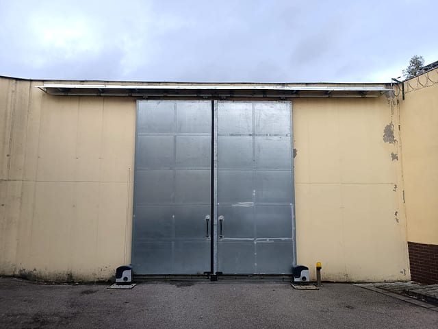

Kompletní dodávka vrat Praha a Středočeský kraj
Vrata na míru včetně pohonu a montáže
Potřebujete nová vrata místo starých, řešíte atypický prostor nebo chcete vrata s motorem a ovládáním? Zaměříme otvor, navrhneme vhodné řešení, vyrobíme vrata na míru a zajistíme dodání, montáž, zprovoznění i následný servis.
Co zajistíme od začátku do konce
- Konzultaci a zaměření prostoru.
- Návrh řešení podle objektu a provozu.
- Výrobu vrat na míru a kompletní dodávku.
- Montáž vrat s motorem, ovládáním, příslušenstvím a zprovozněním.
Jeden dodavatel od návrhu po servis
U nových vrat je důležité, aby na sebe navazovalo zaměření, výroba, montáž i následný servis. Proto řešíme celý proces jako jedno funkční technické řešení, ne jen samotný výrobek.
Vrata na míru dodáváme pro rodinné domy, firmy, SVJ a provozní objekty v Praze a Středočeském kraji. Při konzultaci řešíme rozměry, způsob používání, typ pohonu, ovládání, bezpečnost i budoucí servis.
Ukázky práce
Vrata na míru od výroby po montáž
Fotky ukazují, že nejde jen o prodej samotného výrobku. Řešíme zaměření, návrh, výrobu, dodání, montáž, motor, ovládání a následný servis jako jeden celek.




Chcete nová vrata na míru s pohonem?
Zavolejte a domluvíme zaměření nebo technickou konzultaci.